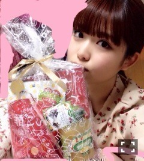

2013/1231Tue楽しかった一日っ(o ・・o)
こんばんごっ(o・・o)
さゆりんごっ(o・・o)
今年最後の握手会ありがとうございました！
最後の挨拶が
よいお年を～で
なんだか楽しかたよヾ(＠⌒ー⌒＠)ノ
２０１３年ありがとうございました*\(^o^)/*
来年もよろぴくヾ(＠⌒ー⌒＠)ノ
握手会でクリスマスの話を沢山
質問されたので
答えてしんぜようヾ(＠⌒ー⌒＠)ノ
私のクリスマス２０１３ver.
２４日
ママとディズニーシーに行く
意外にすいてる
かずみんに会う
大好きなクラッシュと
沢山お話しにいく
手をあげたが当てられなかった(´･_･｀)
コーンポタージュ味のポップコーンを
２回食べてお土産にもう一つ買う
大好きである
花火は強風で中止
帰る
２５日
朝おきたら、ママが洗濯してた
母の有り難みに感動する
ママとさよならする(´･_･｀)
生のアイドルが好き生放送ヾ(＠⌒ー⌒＠)ノ
楽しかったーヾ(＠⌒ー⌒＠)ノ
２０１４年もよろぴくです(*∩ω∩)
スタッフさんに
クリスマスプレゼントをもらう
純粋に嬉しい
ただただ喜ぶ
クリスマス万歳
さゆりんごなので林檎ものヾ(＠⌒ー⌒＠)ノ
あと、ちょーおいしいチョコヾ(＠⌒ー⌒＠)ノ
ありがとうございました！
ちなみに
皆さんサンタさんきましたか？
まっちゅんは来ましたーヾ(＠⌒ー⌒＠)ノ
プレゼントもらいましたーヾ(＠⌒ー⌒＠)ノ
反転してるけど
PSVITA*･゜ﾟ･*:.｡..｡.:*･'(*ﾟ▽ﾟ*)'･*:.｡. .｡.:*･゜ﾟ･*
やばいでそ！？
サンタさん優しい*･゜ﾟ･*:.｡..｡.:*･'(*ﾟ▽ﾟ*)'･*:.｡. .｡.:*･゜ﾟ･*
ありがとうございますサンタさんーヾ(＠⌒ー⌒＠)ノ
ソフトも何個か買ったけど
みなさんのオススメ教えてくださいヾ(＠⌒ー⌒＠)ノ
正月はゲーム漬けやでヾ(＠⌒ー⌒＠)ノ
最後に
スリッパは私物では
ありません！
では、またヾ(＠⌒ー⌒＠)ノ
2013/12/31 00:18
コメント(463)
さゆりん今日もめっちゃ可愛い(^O^)
そしてまだプレゼントもらえていいなぁ(^o^)/
握手会のときの服装もめちゃくちゃ可愛いすぎるてかさゆりんが可愛いからそりゃ可愛い(^O^)
今年ももう終わっちゃうね(^O^)
よいお年をヾ(＠⌒ー⌒＠)ノ
そしてまだプレゼントもらえていいなぁ(^o^)/
握手会のときの服装もめちゃくちゃ可愛いすぎるてかさゆりんが可愛いからそりゃ可愛い(^O^)
今年ももう終わっちゃうね(^O^)
よいお年をヾ(＠⌒ー⌒＠)ノ
さゆりん良いお年を〜
今年もお疲れ様^ ^
来年も良い年であるように。
応援してます(・_＼)y─┛
来年も良い年であるように。
応援してます(・_＼)y─┛
ヒグチだぜ！！
さゆりん！2013年お疲れ様（＾ω＾）
来年でさゆりんは14ちゃいになるんだねー(((o(*ﾟ▽ﾟ*)o)))
さゆりんごぱーんち
ヒグチでしたー(((o(*ﾟ▽ﾟ*)o)))
さゆりん！2013年お疲れ様（＾ω＾）
来年でさゆりんは14ちゃいになるんだねー(((o(*ﾟ▽ﾟ*)o)))
さゆりんごぱーんち
ヒグチでしたー(((o(*ﾟ▽ﾟ*)o)))
VITAーーーー┏( ^o^)┛
俺しろ持っとるん(๑´∀`๑)
ピンクも買おうかな←
ソフト
ソウルサクリファイス
ゴットイーター2
ソウサク
おもしろいんごぉ(●´д`●´д`●´д`●)
さゆりんご〜
さゆり姫
１年間お疲れ様でした。
まっちゅん来年も頑張って＼(^o^)／
良いお年を (^。^)
１年間お疲れ様でした。
まっちゅん
良いお年を (^。^)
俺サンタさん来なかったぁー(;o;)
さゆりんうらやましいなぁー( ・∇・)
さゆりんうらやましいなぁー( ・∇・)
ウインクと投げキッスには
やられましたわ！笑
CDTVみるで！
まっつん、ディズニーシーにクリスマスプレゼントにPSVistaも貰えて、ステキな時間を過ごせて良かったね
今年も今日１日、良い日を
カウントダウンTVも楽しみにしてんで
今年も今日１日、良い日を
カウントダウンTVも楽しみにしてんで
あけましておめでとう！
来年は直接ご挨拶にあがります！
早い目に言っておきます笑
来年は直接ご挨拶にあがります！
早い目に言っておきます笑
こんにちは！
あっつんです(=ﾟωﾟ)ﾉ
京都握手会お疲れ様！
大学生にはサンタさんこなかったよー（；＿；）
淡い期待をしてたんだけどね、、、笑
大人になってしまったんだなぁと、しみじみ！
代わりに少しだけどおこずかいを頂いた！笑
沙友理ちゃんとディズニー行きたいなぁ(*´ー｀*)
俺まだディズニーランドいったことないのよ！
シーなら一回だけ！
ポップコーン食べ過ぎや！笑
でも美味しそうに食べる沙友理ちゃんめっちゃ好きよ(*´_●｀)
新しいゲーム欲しいー
vitaも3DSももってないー
PS3で暇潰ししようかな(=ﾟωﾟ)
てか、触角ないまっちゅんもめちゃ可愛いな！
それでは、明日も1日頑張りましょうヾ(＠⌒ー⌒＠)ノ
ちわりんご！たくとんです(^^)
二日間の握手会お疲れ様でした！私服さゆりんかわいい(*^^*)
プレゼントゲームとか(笑)ゲームやってみたいな(^^)
かずみんブログにも書いてあったけどかずみんに会うなんてすごい偶然やな(笑)
ほならよいお年を～
二日間の握手会お疲れ様でした！私服さゆりんかわいい(*^^*)
プレゼントゲームとか(笑)ゲームやってみたいな(^^)
かずみんブログにも書いてあったけどかずみんに会うなんてすごい偶然やな(笑)
ほならよいお年を～
やまぴーだよ！
覚えてる？
ディズニーいいなーってとこだけど
1/2、3とディズニーシーに家族でいくんだよー
おすすめの乗り物とかある？
初めてだからわかんないなー
たのしい大晦日を過ごしてます
また元旦に更新してね？
ばいばーい
覚えてる？
ディズニーいいなーってとこだけど
1/2、3とディズニーシーに家族でいくんだよー
おすすめの乗り物とかある？
初めてだからわかんないなー
たのしい大晦日を過ごしてます
また元旦に更新してね？
ばいばーい
さゆりんこんにちは\( ˆoˆ )/♡
個別めっちゃ楽しかった〜((o(｡>ω<｡)o))♡
ありがとう((o(｡>ω<｡)o))♡
うちんとこもサンタさんきたで(っ'ω')っ))♡
ほんまサンタさん感謝\( ˆoˆ )/！！！
もう一年終わるね〜！
うちにとっての2013年の一番は
松村沙友理に出会えたこと！！
てへ(っ'ω')っ))♡！
2014年もよろしくお願いします！♡
こんにちりんごっ！
生ドルおもしろかった(*´・д・)(・д・｀*)ﾈｰ
めっちゃコメントしたよ♪
京都は行く予定じゃなかったけど
予定変更して京都全握ﾌﾟﾁ遠征。
今年最後の挨拶できてよかった。
さゆりんもモンハンしようよ～
PSVITAは持ってないからおすすめ分からんっす(*´∀｀*)ｴﾍ
生ドルおもしろかった(*´・д・)(・д・｀*)ﾈｰ
めっちゃコメントしたよ♪
京都は行く予定じゃなかったけど
予定変更して京都全握ﾌﾟﾁ遠征。
今年最後の挨拶できてよかった。
さゆりんもモンハンしようよ～
PSVITAは持ってないからおすすめ分からんっす(*´∀｀*)ｴﾍ
さゆりん！
FFXやるしか！
FFXやるしか！
さゆりん
おはよー♪
ツインテールさゆりん、
可愛い！
白鳥高校アイドル部センターの
さゆりんですね。
キング オブ アイドル
かな。
大晦日のお仕事、
頑張ってね。
おはよー♪
ツインテールさゆりん、
可愛い！
白鳥高校アイドル部センターの
さゆりんですね。
キング オブ アイドル
かな。
大晦日のお仕事、
頑張ってね。
さゆりんご～♡こんにちは！大学生女子です。京都個別握手会１部にいきました(*^_^*)さゆりんごと握手するのは初めてで、すごい緊張しました（笑）実際みるとふわふわしてて女の子らしくてかわいすぎました♡さゆりんごとお話できて楽しかったよ♩
ダンガンロンパ1.2やってないならオススメします。
こうたでした。
こうたでした。
よっ！まっちゅんヽ(｡･ω･｡)ﾉ
どんだけポップコーン食うねん！
ちょー美味しいチョコ詳しく←
VlTA(笑)
良かったな！
ゲームしながら
いろいろ食べる寝正月ですね
分かります←
とりあえず来年もよろしく(｡･ω･)ﾉﾞ♡
で載せてない写メとかないカナ？
あと今年を振り返っての内容とか
書いてほしいんだが！
じゃあ、またねー(o・・o)
タッチ
どんだけポップコーン食うねん！
ちょー美味しいチョコ詳しく←
VlTA(笑)
良かったな！
ゲームしながら
いろいろ食べる寝正月ですね
分かります←
とりあえず来年もよろしく(｡･ω･)ﾉﾞ♡
で載せてない写メとかないカナ？
あと今年を振り返っての内容とか
書いてほしいんだが！
じゃあ、またねー(o・・o)
タッチ
2013年もお疲れさま！
最後の握手会も楽しかったよ！
2013年は全国ツアーもあって、ライブも多かったし、乃木坂とさゆりんとの思い出がたくさん増えて嬉しい気持ち！
でも、まだまだ、さゆりん不足なので、2014年もさゆりん一筋で推して推して愛していきます！！よろしくです。
では、良いお年を！！
最後の握手会も楽しかったよ！
2013年は全国ツアーもあって、ライブも多かったし、乃木坂とさゆりんとの思い出がたくさん増えて嬉しい気持ち！
でも、まだまだ、さゆりん不足なので、2014年もさゆりん一筋で推して推して愛していきます！！よろしくです。
では、良いお年を！！
はななんだよ〜｡.ﾟ(´｡ >< ｡` )♡.。º*＊
さゆりんのクリスマス充実してるね❥❥
うちは23日にさゆりんとたっくさん会えて幸せでした( • ̀ω•́ )♡！
やっほー
2013年おつかれでーす！
クリスマスにディズニーとかいいな！
夢ですね（笑）
まぁ今年も安定のバイトでした！
生のアイドルが 好きみたよー
さゆりんの変態具合がおもろかった（笑）
クリスマスプレゼントもらいすぎー
もうサンタさんとかこんわーorz
ゲーム漬けとかうらやましい！
さゆりんは正月は地元で過ごすんですか？
ことしはお疲れ様でした！
では良いお年を(^O^)／
2013年おつかれでーす！
クリスマスにディズニーとかいいな！
夢ですね（笑）
まぁ今年も安定のバイトでした！
生のアイドルが 好きみたよー
さゆりんの変態具合がおもろかった（笑）
クリスマスプレゼントもらいすぎー
もうサンタさんとかこんわーorz
ゲーム漬けとかうらやましい！
さゆりんは正月は地元で過ごすんですか？
ことしはお疲れ様でした！
では良いお年を(^O^)／
むっちゃクリスマス充実してるやん(゜o゜)
うちにはサンタさんが46人来たんやでー(´Д` )
CDTVみるよ～(^з^)-☆
フィンクスだよー(*^_^*)！
まっつんかわいいー！
ビータよかったね！おれは今年も何ももらえなかったよw
来年も頑張ってこー！
まっつんかわいいー！
ビータよかったね！おれは今年も何ももらえなかったよw
来年も頑張ってこー！
こんばんは(^O^)
クリスマスプレゼントいっぱいですね！！
かずみんのブログ読みました！さゆりんに会ったって書いてたので、、偶然は凄いですね(^･^)
vita持ってないんですよねー…
どんなソフト買ったんですかー？
私服可愛いですね！！(*^_^*)
2013も今年で最後！！そういえばカウントダウンありますね！楽しみにしてます！
頑張ってください！
クリスマスプレゼントいっぱいですね！！
かずみんのブログ読みました！さゆりんに会ったって書いてたので、、偶然は凄いですね(^･^)
vita持ってないんですよねー…
どんなソフト買ったんですかー？
私服可愛いですね！！(*^_^*)
2013も今年で最後！！そういえばカウントダウンありますね！楽しみにしてます！
頑張ってください！
握手会、お疲れさま♡
クリスマスのディズニーシー
いいなー(^^*)
うちにもサンタさん来たよ♡
私は、ブーツもらったよ！
クリスマスのディズニーシー
いいなー(^^*)
うちにもサンタさん来たよ♡
私は、ブーツもらったよ！
年始には初めてりんごのとこに会いに行くね
ハロー！！&のぎー！！
今年最後の乃木活お疲れ様でした(≧∀≦)
今年はどんな１年でしたか？
まっちゅんはまだサンタさんがくるんだね(*ノ▽ノ)
しかもVITAだと!?
3DSも持ってるのに!?
うらやましいぜぇ(´・ω・｀)
今年最後の乃木活お疲れ様でした(≧∀≦)
今年はどんな１年でしたか？
まっちゅんはまだサンタさんがくるんだね(*ノ▽ノ)
しかもVITAだと!?
3DSも持ってるのに!?
うらやましいぜぇ(´・ω・｀)
さゆりんはいつでもカワイイ(*≧∀≦*)ですね！ツインテール似合いすぎです☆大好きです♪♪
まっちゅんおはよー！
クリスマスのディズニーシーって意外と空いてるのか！！良い事学んだなぁ笑笑
てか、まっちゅん。ただただ可愛い笑
てか、サンタさん来たの！？いーな…俺は今年良い子にしてなかったから来なかったよー…
そして、PSVITAはお年玉で買う予定！！そしたら、逆にまっちゅんのオススメを教えてね！笑
あー、京都で握手したかったなぁ…幕張には行くね！
それじゃあ、今日のCDTV見るから頑張ってね！ばいばーい！またね！
クリスマスのディズニーシーって意外と空いてるのか！！良い事学んだなぁ笑笑
てか、まっちゅん。ただただ可愛い
てか、サンタさん来たの！？いーな…俺は今年良い子にしてなかったから来なかったよー…
そして、PSVITAはお年玉で買う予定！！そしたら、逆にまっちゅんのオススメを教えてね！笑
あー、京都で握手したかったなぁ…幕張には行くね！
それじゃあ、今日のCDTV見るから頑張ってね！ばいばーい！またね！
おつかれさまー！
2日間ありがとー！
楽しかった(*´∇｀*)
今日はCDTVやな！
絶対見る！ファイトやで！
ほなね( ・∇・)ﾉ
2日間ありがとー！
楽しかった(*´∇｀*)
今日はCDTVやな！
絶対見る！ファイトやで！
ほなね( ・∇・)ﾉ
まっつん(*´-`)
握手会行きたかったな(ToT)
ディズニーシーいいなー
コーンポタージュ味のポップコーン食べたことない(゜ロ゜)
いつかいったら食べてみよー
美味しそー(ノ´∀｀*)
まっつんのとこにはサンタさん来たのかー(°▽°)
おれのとこには来なかったよ(T-T)
いい子にしてなっかったからかな??
まっつんは今年一年いっぱいお仕事して、みんなを笑顔にしてくれて本当に頑張ってたからサンタさんきたんだと思うよ(*´-`)
おれも来年はまっつんみたいにがんばろーっとヽ(￣▽￣)ノ
まっつん
今年一年ご苦労様でした(ノ´∀｀*)
握手会行きたかったな(ToT)
ディズニーシーいいなー
コーンポタージュ味のポップコーン食べたことない(゜ロ゜)
いつかいったら食べてみよー
美味しそー(ノ´∀｀*)
まっつんのとこにはサンタさん来たのかー(°▽°)
おれのとこには来なかったよ(T-T)
いい子にしてなっかったからかな??
まっつんは今年一年いっぱいお仕事して、みんなを笑顔にしてくれて本当に頑張ってたからサンタさんきたんだと思うよ(*´-`)
おれも来年はまっつんみたいにがんばろーっとヽ(￣▽￣)ノ
まっつん
今年一年ご苦労様でした(ノ´∀｀*)
松村沙友理ちゃんへ
さゆりんご姫！
結成当初から乃木坂46を応援して2年4ヶ月、今年も一年ありがとうございました。
くる年2014年も乃木坂46を全力で応援します。
年末年始さゆりんご姫テレビ出演多いねぇー。
カクキー忙しくてテレビ観る時間がないのよ。
元旦まで休まずお仕事頑張ります。
よいお年を…。
Kackey
さゆりんご姫！
結成当初から乃木坂46を応援して2年4ヶ月、今年も一年ありがとうございました。
くる年2014年も乃木坂46を全力で応援します。
年末年始さゆりんご姫テレビ出演多いねぇー。
カクキー忙しくてテレビ観る時間がないのよ。
元旦まで休まずお仕事頑張ります。
よいお年を…。
Kackey
握手会楽しかったよ！
いろいろ悩んでいった握手会やったけど・・・
もう悩まない、ただ純粋にさゆりんをこれからも推していきます！
クリスマスにお母さんと過ごせて良かったね(*≧∀≦*)
サンタさんこやんかったわ(涙)
PSVITA、うらやましいーーー。
今年ラスト1日頑張ってね！
来年もよろしくお願いいたします！
さゆりんはピンクの洋服がお似合いすぎですよ(*´ω｀*)
いろいろ悩んでいった握手会やったけど・・・
もう悩まない、ただ純粋にさゆりんをこれからも推していきます！
クリスマスにお母さんと過ごせて良かったね(*≧∀≦*)
サンタさんこやんかったわ(涙)
PSVITA、うらやましいーーー。
今年ラスト1日頑張ってね！
来年もよろしくお願いいたします！
さゆりんはピンクの洋服がお似合いすぎですよ(*´ω｀*)
まっちゅんvita買ったんだ！
FF10がオススメだよヾ(＠⌒ー⌒＠)ノ
FF10がオススメだよヾ(＠⌒ー⌒＠)ノ
お疲れさま～(^o^)
京都の全国握手会、個別
二日間ありがとうね～(^.^)
めっちゃ楽しかったよぉ!!
さゆりんに今年一年のお礼を
伝えられて良かったよぉ～(*^^*)
よいお年を～
京都のあっきーでした(^-^)/
京都の全国握手会、個別
二日間ありがとうね～(^.^)
めっちゃ楽しかったよぉ!!
さゆりんに今年一年のお礼を
伝えられて良かったよぉ～(*^^*)
よいお年を～
京都のあっきーでした(^-^)/
VITAでお薦めゲームは
・朧村正
・グラビティデイズ
・テラウェイ
とくにテラウェイは可愛いからお薦めやで！
・朧村正
・グラビティデイズ
・テラウェイ
とくにテラウェイは可愛いからお薦めやで！
さゆりんごおはよー


昨日は 日お疲れ様
日お疲れ様

先日は 京都で全握だったねー
京都で全握だったねー

当日 京都では雪
京都では雪 が
が

降っていたのかな いなかった
いなかった かな
かな
だからスゴイ 寒かったみたけど
寒かったみたけど
メンバーは 大丈夫
大丈夫 だったかなぁー
だったかなぁー
まぁ 会場の中は
会場の中は 温かいから
温かいから
大丈夫 だったかな
だったかな
今年 最後の全握楽しめた
最後の全握楽しめた みたいで
みたいで
よかったです
そして一昨日は京都で個別握手会
いかがでしたかぁーー
今年最後の握手会でしたね
年末にファンと
 触れ合えるのって
触れ合えるのって
なんかいいですよねーー
僕も行きたかった

 ですー
ですー
これで仕事 納めの
納めの
メンバーもいるのかな
もしそうだったら今年もお疲れ様でした
来年もよろしくねーー
まだ まだお仕事があったら
まだお仕事があったら
頑張ってください僕も頑張ります←なにを
では今日も日頑張りましょう
たーちゃんより
昨日は
先日は
当日
降って
だから
メンバーは
まぁ
大丈夫
今年
よかったです
そして一昨日は
いかがでしたかぁーー
今年
なんか
僕も
これで仕事
メンバーも
もし
まだ
頑張ってください
では今日も
たーちゃんより
サンタさん来たよ！
洋服が届きました。
サンタさんがくれるものはいつも気に入る(^^ゞ
自分のこと良くわかってくれてるんだなと、
そう思いました。
あと、乃木どこ「(゜゜)゛さゆりんの妄想クリスマス良かったよ！
上では濃厚（笑）
そいでさー、あの冷めた「かわいそう」はないでしょう！
日村さんをもっと好きになりましょう！
じゃあ(゜▽゜)/
洋服が届きました。
サンタさんがくれるものはいつも気に入る(^^ゞ
自分のこと良くわかってくれてるんだなと、
そう思いました。
あと、乃木どこ「(゜゜)゛さゆりんの妄想クリスマス良かったよ！
上では濃厚（笑）
そいでさー、あの冷めた「かわいそう」はないでしょう！
日村さんをもっと好きになりましょう！
じゃあ(゜▽゜)/
さゆりん京都の個別お疲れ様(^_^)
PSPもらったんだ！丁度自分も買おうと思ってたんだよね。
サッカーとか面白いけど女の子は苦手かな？
最近体調崩してるメンバーも居るから体調に気をつけてね(^-^)
あと大食いのさゆりんだから正月おせちとか餅の食べ過ぎ注意だよ！(>_<)
今日の夜テレビちゃんと見るから頑張ってね～(^o^)
PSPもらったんだ！丁度自分も買おうと思ってたんだよね。
サッカーとか面白いけど女の子は苦手かな？
最近体調崩してるメンバーも居るから体調に気をつけてね(^-^)
あと大食いのさゆりんだから正月おせちとか餅の食べ過ぎ注意だよ！(>_<)
今日の夜テレビちゃんと見るから頑張ってね～(^o^)
ことしもきょうでおわりですね〜
さゆりんのクリスマスめっちゃいい！！！
ディズニーとかうらやましいです！！
わたしのクリスマスは部活で遠征でした〜
なーんにもたのしくなかったです（笑）
さゆりん来年も応援してます
今年も今日で終わりだー(^_^)v
めちゃくちゃ早かったσ(^_^;)
クリスマスなのにディズニーシーが空いてるのは以外だね(^ー゜)
クラッシュは不思議だよね。
なぜ、その時その時で答え方が違うのかな？
PSVITA良いね( ´ ▽ ` )ﾉ
京都お疲れ〜
今日の生放送がんばりんごっo(^_-)O
さゆりん好きだー
んじゃ。
めちゃくちゃ早かったσ(^_^;)
クリスマスなのにディズニーシーが空いてるのは以外だね(^ー゜)
クラッシュは不思議だよね。
なぜ、その時その時で答え方が違うのかな？
PSVITA良いね( ´ ▽ ` )ﾉ
京都お疲れ〜
今日の生放送がんばりんごっo(^_-)O
さゆりん好きだー
んじゃ。
PS VITA のオススメソフトは「FIFA14」っていうサッカーゲーム！ サッカーめっちゃ楽しいよ(o・・o)/誰かと対戦すると、より楽しい！
もし買ったら「アーセナル」っていうチームがめっちゃ強いから、使ってみてねヾ(＠⌒ー⌒＠)ノ
沙友理さん、よいお年を！
もし買ったら「アーセナル」っていうチームがめっちゃ強いから、使ってみてねヾ(＠⌒ー⌒＠)ノ
沙友理さん、よいお年を！
こんにちりんご。
いいなあ～～。
サンタさん来たんだ。
それも、そんな高価なプレゼントもらえて。
俺にはサンタさん、来なかった。
悪いおっさんだからかな。
CDTV録画してみるね。
生ドルも期待してるね。
尻占いに続く企画を。
それでは、来年もよろしく。
じゃあね。( ´ー｀)ﾉ
いいなあ～～。
サンタさん来たんだ。
それも、そんな高価なプレゼントもらえて。
俺にはサンタさん、来なかった。
悪いおっさんだからかな。
CDTV録画してみるね。
生ドルも期待してるね。
尻占いに続く企画を。
それでは、来年もよろしく。
じゃあね。( ´ー｀)ﾉ
さゆりんとてもかわいい(＊´･ω･｡)σｨﾁﾞｨﾁﾞ


んごぉー\( ˆoˆ )/